Activos / Equipos, Objetos de Mantenimiento
Qué es un Activo/Equipo. Cómo se codifica un Activo/Equipo. Qué es el despiece, cuándo despiezar y hasta donde. Cómo se define una Ficha Técnica. Qué operaciones y procedimientos es posible ejecutar sobre los Activos. Todas las respuestas, más las recomendaciones y enfoque para el adecuado registro, seguimiento y administración de los Activos / Equipos y demás objetos de Mantenimiento, son parte del contenido de este capítulo.
Conceptos Básicos sobre Activos/Equipos
Un Activo/Equipo es un bien de la organización que contribuye en el objetivo de logro de riqueza de ésta última, y que debe ser atendido y mantenido por el departamento de Mantenimiento o sus delegados, para que genere aumento de la capacidad de producción o de servicios y de su demanda.
Son Activos /Equipos, una bomba, un motor, un vehículo, un tren de producción, un ventilador, un tanque, un edificio, una instalación, una red, una facilidad, una piscina o un jardín.
Se considera también un Activo /Equipo, a un componente o subcomponente de otro, que exige actividades o rutinas de mantenimiento propias, al que se le definen Programas de Mantenimiento individuales y al que se le asocia una Historia de Mantenimiento individual.
Por tanto un Activo /Equipo encaja en el concepto de que es individual pero simultáneamente puede ser parte de otro y puede estar conformado por otros. Esta relación se define muy fácilmente según el esquema de codificación que se detalla más adelante.
En el AM** hay una tabla de la Base de Datos que está encargada del registro y definición de todo Activo / Equipo. Se trata de la tabla de Equipos, en la que se definen incluyendo su despiece y Ficha Técnica.
Ficha Técnica
La Ficha Técnica de un Activo / Equipo es el conjunto de información que lo define como un Activo de la empresa y también como un Objeto de Mantenimiento. Como activo de la empresa se define información relacionada a su Número de Activo o Número de Inventario, lo relacionado con el Centro de Costo al que presta sus servicios y su respectivo Responsable, además de sus fechas y costos de compra.
Como Objeto de Mantenimiento se define la información técnica del Activo / Equipo. Esta porción de información técnica se descompone en: Información Universal, Información Característica e Información sobre Contadores y Estado. Cada una de estas porciones se revisará detenidamente en los numerales que siguen.
Nota: Antes de proceder a registrar un Activo (Ficha Técnica), es importante verificar que toda la información prerrequisito ya fue creada en el Sistema. Para un Activo se considera Información Prerrequisito: su Ubicación Física, Centro de Costo, Proveedor, Fabricante y Características del Activo. Esto garantiza una definición ágil del Activo, al tiempo que garantiza que cada nuevo Equipo similar, que se copie desde un original, sea generado con la información integral.
En muchos procesos a través de opciones posteriores el – AM- entrega automáticamente los campos de Ubicación Física, Centro de Costo, Proveedor, Referencia, etc. con el solo hecho de seleccionar el Activo. Esta es otra razón para involucrar desde el comienzo tales campos en el registro del Activo/Equipo.
Información Universal
Es el conjunto de información genérica que es válida para cualquier Activo / Equipo, sin distingos del tipo, o de la función que desempeña. Código, Descripción, Referencia, Ubicación Física, Centro de Costo, Proveedor, Fabricante, Número de Serie, Tipo, Modelo, etc. es un conjunto de datos que encaja en el concepto de Información Universal. Son estos datos que son definibles a cualquier Objeto de Mantenimiento.
Información Característica
Es un conjunto de datos propio del Activo / Equipo que depende del mismo, de su tipo o modelo y que se relaciona con sus características técnicas y funcionales. Cuando por ejemplo se define la información característica de un motor se toman en cuenta parámetros como su Voltaje, Amperaje, HP, RPM, Fases, Conexión, Blindaje, Factores de Potencia y de Servicio, etc.
Ninguno de estos parámetros sin embargo, es de utilidad si la intención es definir un Equipo de cómputo o una instalación locativa, en cuyos casos los parámetros característicos serían muy diferentes.
Sobre esta información característica el – AM– ofrece una tabla preconfigurada con nombres de parámetros que pueden ser escogidos al momento de configurar la ficha técnica. Tales nombres de parámetros son modificables, adecuables, borrables e incluso es posible adicionar nuevos a la tabla. Se pretende que el tratamiento que se dé a estos parámetros a todo lo largo del sistema sea uniforme y estandarizado. Por esto la Administración de la Tabla de Características es restringida y centralizada.
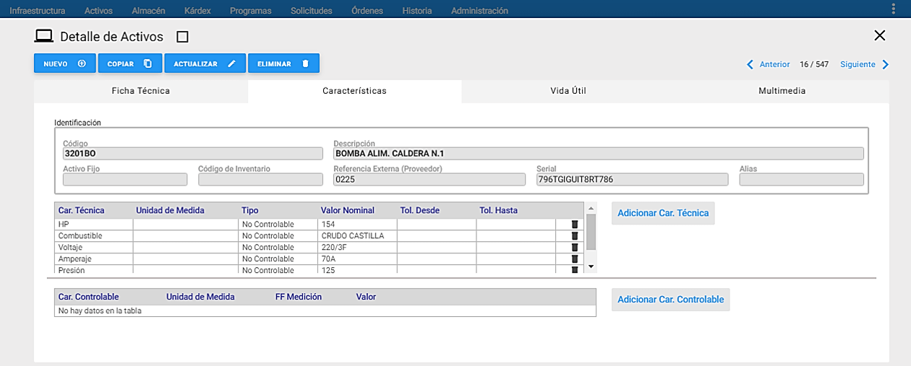
Información sobre Contadores
Es el conjunto de información referente al contador del Activo / Equipo. El contador es normalmente un medidor de la cantidad de trabajo realizada por el Activo, en función de una unidad de producción predefinida, como Horas trabajadas, Kilómetros recorridos por el vehículo, o número de Batches o Lotes o Piezas producidas.
Esta información se requiere sólo cuando el Activo usa un contador que sirve para programar Actividades de Mantenimiento, mediante la opción Programas de Mantenimiento del Menú Principal.
En forma alterna, cuando se trata de un Activo / Equipo que no trabaja con base en una Función Uniforme, sino en función de oferta y demanda, como por ejemplo un compresor.
De respaldo el – AM- posibilita definir un Estándar de Planeación, que es un datos promedio del trabajo realizado por ese Activo en una Unidad de Tiempo, y que se debería ser definido para al menos una semana. Este dato se establece con base en registros históricos o estadísticos del desempeño del Activo. Este dato es utilizado por el Módulo de Programas de Mantenimiento, cuando debe realizar una proyección hacia el futuro.
Codificación de Activos/Equipos
El AM está capacitado para aceptar y definir 5 códigos para cada Activo / Equipo. Cada estructura de código es independiente de las otras y sirve para localizar o acceder o estudiar un Activo, partiendo de distinta información que distintos tipos de usuarios puedan tener sobre el mismo. Las cinco estructuras son: el Código de Mantenimiento (objeto de la presente sección), el Código Referencia (código externo, o dado por el proveedor), el Código de Activo, el Código de Inventario, un número de Activo Fijo (normalmente contable), un número de Serie propio del Activo, y un Código Alias (propio de la cultura técnica empresarial).
Como se dijo antes, en esta sección se estudia el Código de Mantenimiento del Activo.
Se trata entonces de un Código de 18 posiciones. Es un código amplio, jerárquico, multinivel, que se estructura y diseña flexiblemente de acuerdo con la necesidad o el gusto del usuario.
Estructurar el código de Activo / Equipo es una labor de Implementación que exige estudio, discusiones y participación de varios usuarios entendidos. Al tiempo exige a todo usuario con capacidad de definir códigos de Activos, el compromiso de uso, ajustado a la norma que lo estructuró. – AM– es capaz de asumir la estructura de Código que ya exista en la instalación. De todas formas si no se tiene una estructura predefinida o si se desea revisar y modificar la que ya existe, se deben tener en cuenta las siguientes observaciones:
1. AM garantiza un conjunto de funciones con base en el Código de Activo, que es estructurado y conformado por niveles jerárquicos. Con base en tal estructuración se posibilita el despiece de los Activos. A manera de ejemplo, una estructuración de los niveles que se menciona, podría ser: Activo/Equipo, Sistema, Subsistema, Componente y Parte, entre otros.
Por ejemplo: el código COARCSU se puede descomponer de la siguiente forma:
CO Grupo de Equipos corrugadores COA Corrugador A COARC Sistema de Rodillos Corrugadores del Corrugador A. COARCSU Rodillo superior del Sistema de Rodillos Corrugadores del COA
2. Antes de codificar algún Activo se debe haber establecido la estructura general y común de codificación de Activos de la empresa. Tal estructura se conforma definiendo los grupos significativos de primer, segundo, tercer y en ocasiones hasta de cuarto orden, de acuerdo a la cultura técnica y requerimientos del área de Mantenimiento.
Despiece de Activos / Equipos
Existen varios criterios para despiezar un Activo / Equipo o uno de sus componentes. El primero que se menciona es lograr el despiece total del Activo / Equipo hasta asociar cada componente mínimo con un código de Repuesto en el Almacén.
Otro, plantea el despiece a un nuevo nivel, por la necesidad de mantener Historia de Mantenimiento individual y detallada. Para ese nuevo nivel de despiece, el – AM- trabaja principalmente bajo este segundo concepto.
Lo anterior posibilita obtener la Historia de Mantenimiento total, detallada de un Activo / Equipo, en conjunto con la de todos sus componentes de despiece, si es del caso. Pero también es posible obtener la Historia detallada de un Activo o de algún componente de despiece, incluyendo solamente las actividades relacionadas con el nivel requerido, sin incluir más niveles inferiores de despiece. En todo caso, el proceso de definir un nuevo nivel de despiece se centra en la creación de un nuevo nivel jerárquico en la estructura del código actual. En el ejemplo del numeral 1 de la sección anterior vemos como el nivel COARCSU es un nuevo nivel de despiece del nivel anterior, el COARC.
Ventana Principal de Activos / Equipos
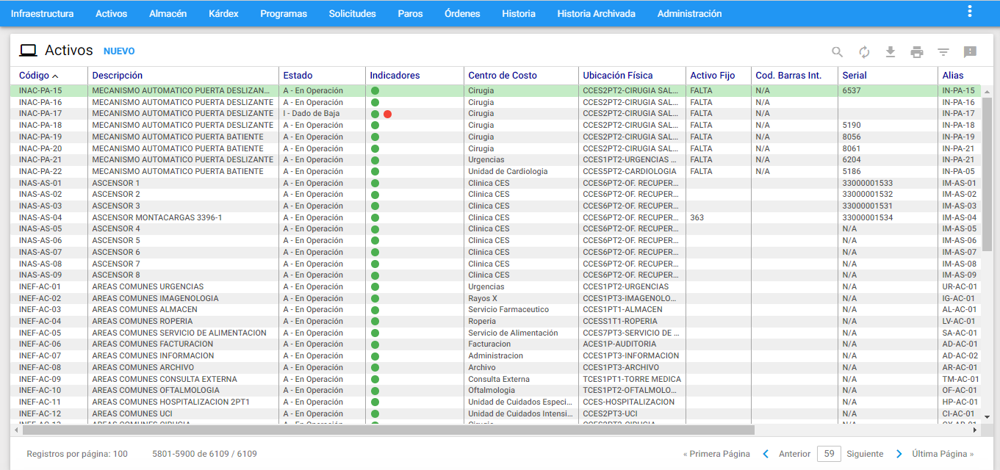
A esta ventana se llega haciendo clic sobre la opción Activos del Menú Principal. A través de ella se ejecutan todas las funciones dedicadas a administrar los Activos / Equipos. A continuación se ilustran las porciones que la componen.
Ventana Visor
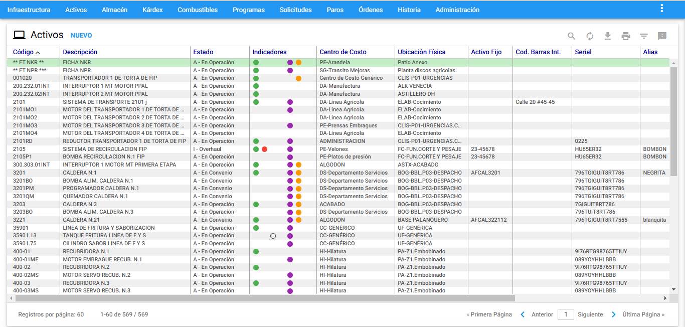
Desde esta ventana es posible observar los Activos / Equipos existentes. Se listan todos o una selección o subgrupo de ellos. El conjunto de Activos / Equipos disponibles a ser desplegado se muestra a través de páginas. El tamaño de las páginas es configurable desde la opción Administrar por parte de quien tenga acceso a ella.
Al hacer clic sobre alguno de los Activos / Equipos del Visor el sistema responde mostrando la información de ese Activo, en forma detallada, en una ventana llamada Ventana Detalle.
Los títulos en azul que encabezan las columnas son también botones que permiten ordenar la tabla, según el título seleccionado. Para elegir un registro de la tabla se da un clic del mouse sobre él o se desplaza el cursor con las teclas de desplazamiento.
Ventana Detalle
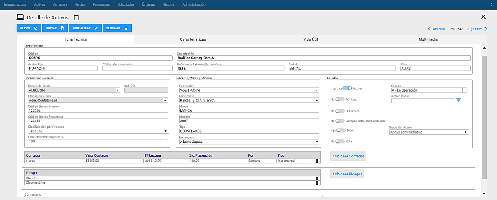
En la gráfica anterior, Ventana Detalle de Equipos, se aprecian todos sus componentes y sus respectivos contenidos. En la ventana Detalle de Equipos se encuentra toda la información relevante al Activo / Equipo seleccionado en el Visor.
A continuación se describen los campos que componen el registro. Sobre cada campo se da una breve explicación.
Código: En este campo se registra el código del Activo / Equipo, correspondiente al código de Mantenimiento, de acuerdo a la estructuración por niveles que se haya definido durante la etapa de Planeación de la Implementación.
Descripción: Este campo no tiene un rótulo determinado. Se utiliza para describir el nombre del Activo / Equipo. Este campo cuenta con una capacidad de 60 caracteres, es obligatorio.
Activo Fijo: O Número de Inventario, es el Código Contable del Activo, según Contabilidad. Este campo cuenta con una disponibilidad de 20 caracteres y también es posible acceder al Activo a través de él.
Código de Inventario: En este campo se registra el código de inventario del Activo / Equipo, que Mantenimiento haya definido o el definido por el área de Activos o el área Contable de la institución.
Referencia Externa (Proveedor): En este campo se indica el código con el cual el Proveedor conoce el Equipo. Este campo cuenta con una disponibilidad de 20 caracteres. Se trata de un código a través del cual es posible acceder al Activo en función de su Referencia.
Serial: Este campo se utiliza para registrar el número de serie que identifica individualmente a un Equipo según el fabricante. Este campo cuenta con una disponibilidad de 20 caracteres, es también un código a través del cual es posible acceder a cualquier Activo.
Alias: En algunas plantas por tradición o cultura, se tiene una denominación especial con la cual se conocen algunos Activos / Equipos. Este campo es el especial para registrar tal nombre especial. Igualmente se puede utilizar para registrar códigos antiguos con que se definían los Activos antes de la nueva codificación. Este campo cuenta con una disponibilidad de 20 caracteres y también es un código a través del cual es posible acceder al Activo / Equipo.
Centro de Costo: En este campo se registra o se despliega automáticamente, el Centro de Costo al que está asociado el Activo. Si el Activo se definió previamente, el Centro de Costo aparece automáticamente. Si es una nueva definición la que se está realizando, el sistema muestra y pone como disponible todo el contenido de la tabla de Centros de Costo definidos en la Infraestructura, para seleccionar el que corresponde al Activo. Es muy importante definir este campo desde el mismo momento de la definición del Activo, puesto que es un campo derivado o sea que se trae automáticamente para muchas funciones, cada vez que se invoca el Activo.
Sub CC: Este campo siempre está bloqueado y muestra el Código Sub CC asociado al Centro de Costo elegido.
Ubicación Física: En este campo se traen automáticamente las Ubicaciones Físicas definidas en la infraestructura, para definir la ubicación geográfica del Activo en la planta. Este campo es muy importante definirlo desde el mismo momento en que se cree el Activo / Equipo, puesto que es un campo derivado, es decir, que se trae automáticamente para muchas funciones.
Código Barras Interno: Este campo pertenece al Código de Barras Interno del equipo, en caso que exista alguno dentro de la empresa. Este campo cuenta con una disponibilidad de 22 caracteres.
Código Barras Proveedor: Este campo pertenece al Código de Barras que fue asociado al equipo por parte del Proveedor.
Clasificación por Proceso: Es la importancia o criticidad de un Activo / Equipo en la línea. En este campo se traen automáticamente las diferentes clases como puede ser clasificado un Activo / Equipo, de acuerdo con el siguiente listado:
Clave o crítico
Detiene el proceso
Fácil reemplazo
No afecta el proceso
Poco uso
Ninguno
Confiabilidad Subjetiva: Este es un concepto subjetivo. En este campo se escribe un valor del 0 al 100%, a criterio del técnico ejecutor, que indica el grado de confiabilidad del Equipo. A pesar de lo subjetivo, este valor puede ser de consideración importante cuando se realiza una reparación a un Equipo. Se puede actualizar desde las Órdenes de Trabajo, en el momento de su cierre.
Proveedor: En este campo se traen automáticamente los diferentes Terceros asignados como Proveedor/Fabricante, para seleccionar el correspondiente.
Fabricante: En este campo se traen automáticamente los diferentes Terceros asignados como Proveedor/Fabricante, para seleccionar el correspondiente.
Marca: Este campo se utiliza para diligenciar la Marca que identifica el Activo / Equipo. Este campo cuenta con una disponibilidad de 22 caracteres.
Modelo: Este campo se utiliza para diligenciar el Modelo que identifica un Activo / Equipo según el fabricante. Este campo cuenta con una disponibilidad de 30 caracteres.
Tipo: Es una característica particular de un Activo / Equipo. Este campo se utiliza para diligenciar el tipo que identifica un Equipo según su uso o el fabricante. Este campo cuenta con una disponibilidad de 20 caracteres.
Encargado: Son personas propias de la empresa encargadas de la operación o funcionamiento del Activo / Equipo. En este campo se traen automáticamente los diferentes Terceros asignados como Responsable Interno/Empleado y Responsable Externo/Contratista, para seleccionar el correspondiente.
EQ-Raíz: Este campo se utiliza para identificar los Activo / Equipos que son una unidad funcional que se despieza (Equipos raíz). Solo se consideran como Equipo Raíz aquellos Activo / Equipos que no tienen una dependencia de otros y que más bien son la base de despiece de sus componentes.
Ruta: En este campo se indica si el Activo / Equipo que se está definiendo es realmente una Ruta. Cuando se ha indicado que se trata de una Ruta, el sistema se prepara para recibir un conjunto de información adicional correspondiente a la Ruta. Se debe recordar que las rutas de mantenimiento asocian o integran varios Equipos.
Estado: El campo estado se utiliza para definir si el Activo actual se encuentra Activo (Operativo) o Inactivo (No operativo o dado de baja temporal o totalmente). Este Estado se utiliza durante los procesos de Generación Automática de Ordenes de Trabajo y de Proyección para un período futuro, pues solamente se tienen en cuenta aquellos Equipos con Estado Activo.
**A ** Dado en préstamo
**A ** Recibido en préstamo
**A ** Dado en arriendo
**A ** Recibido en arriendo
**A ** En convenio
**A ** Otro
Los Activo / Equipos Inactivos pueden tener las siguientes condiciones:
| ** | ** Dado de baja |
**I ** Overhaul
**I ** No está en operación
**I ** Otro
Contador: En este campo se traen automáticamente de la tabla de Infraestructura los diferentes tipos de Contadores que pueden ser definidos para un Equipo o una máquina. Se selecciona el que mejor refleje o sea más representativo del trabajo que realiza el Equipo. Se usa además, al definir un Programa de Mantenimiento, en función del trabajo realizado por el mismo Equipo.
Decremental / Incremental: En este campo se elige si es un Contador tipo Incremental (siempre aumenta) o Decremental (permite valores que decrecen o negativos).
Valor Contador: En este campo con capacidad de 58 dígitos se registra el valor del contador según la última lectura realizada. Es un valor base para los procesos de Proyección y Programación que se realizan desde Programas de Mantenimiento.
FF Lectura: Es la fecha en la cual se toma la medición actual del contador. Es una fecha base para el proceso de Proyección y Programación que se realiza desde Programas de Mantenimiento.
Std. Planeación: Es un promedio de trabajo realizado por el Equipo en una unidad de tiempo, en función de su contador asociado. En este campo se escribe la cantidad de unidades que avanza en un lapso, el contador seleccionado. Por medio del estándar de Planeación se realiza la proyección de un contador para un Equipo, hacia el futuro.
Por: En este campo se indica la unidad de tiempo considerada en el Estándar de Planeación. Se puede seleccionar cualquiera de las siguientes opciones:
- Día
- Semana
- Quincena
- Mes
Comentario: Aquí se ingresan los comentarios sobre un Activo o se especifica información adicional al AC.
Ventana Submenú de Activos / Equipos
Ir a AC
Esta opción se encuentra ubicada al lado superior derecho de la ventana Visor. Al darle clic al Buscar, se abre un campo al lado izquierdo, donde se registra el código exacto del Activo que se desea encontrar rápidamente. Luego de digitar el código del Activo / Equipo, se presiona la tecla Enter y el cursor se posiciona en consecuencia, sobre el Activo deseado en el Visor.

En caso de escribir el código con algún error, el sistema muestra un mensaje de alerta indicando que el Activo no existe.
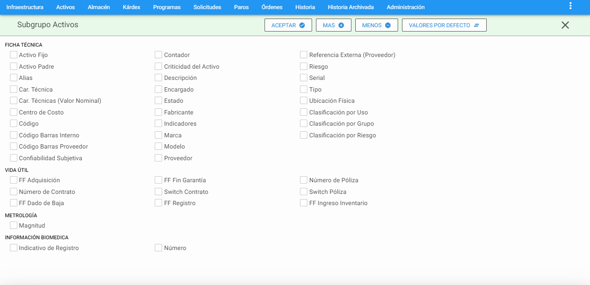
Indicadores
Es posible visualizar de manera inmediata, los Activos que son raíz, ubicaciones técnicas, componentes intercambiables y si estos dos últimos no están asociados entre ellos. También, si tienen asociados Multimedia, características técnicas y biomédicas directamente desde la ventana visor, a través de la columna “Indicadores” que muestra una pelota de color que indica el tipo de información definida y asociada. El significado del color de cada pelota, se puede ver en el recuadro de Indicadores, ubicado en la parte superior derecha de la ventana visor.
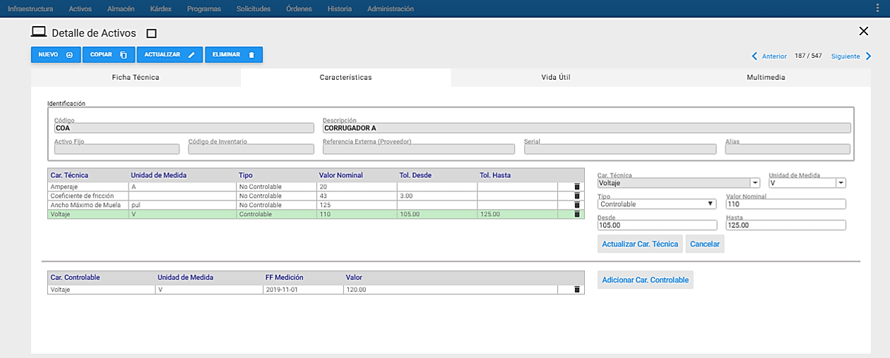
El significado de los colores se visualiza al sobreponer el mouse en el icono que se encuentra al extremo superior derecho y su correspondencia es:
-
Verde: Activos definidos con AC-Raíz como SÍ.
-
Amarillo: Activos definidos como Ubicación Técnica.
-
Café Oscuro: Activos definidos como Componentes Intercambiables y que están asociados a una Ubicación Técnica.
-
Morado: Activos que tienen asociadas Características Técnicas en la pestaña de Características.
-
Naranja: Activos que tienen asociados archivos de imágenes, videos y/o documentos en la pestaña Multimedia.
-
Blanco: Activos definidos como Ubicación Técnica o Componentes Intercambiables y que no están asociados a Componentes Intercambiables o Ubicación Técnica, respectivamente, es decir, que están disponibles para ser asignados.
Subgrupo
Se usa para seleccionar grupos de Activos / Equipos que cumplen con un conjunto de filtros o criterios. El objetivo para hacerlo es realizar un estudio posterior sobre los registros seleccionados en el subgrupo. Para ingresar a esta opción se debe dar clic al icono de filtro, ubicado en la parte superior derecha de la ventana Visor de Activos.
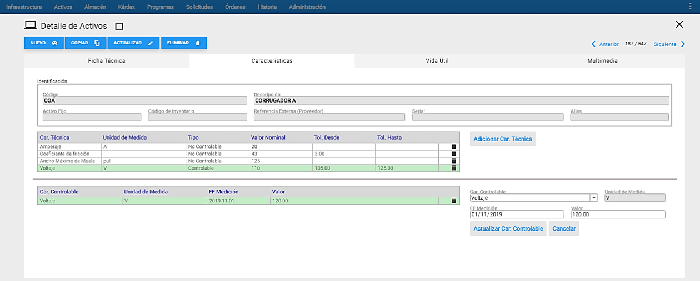
Cada criterio trabaja en conjunto con los demás, con el operador intersección.
Cada criterio aparece inicializado en un valor global que permite mostrar todos los Activos. Lo que significa que de no escoger un criterio se obtiene como resultado del subgrupo el mismo conjunto de todos los Activos.
AM mantiene activo cualquier subgrupo en cada módulo, hasta que el usuario lo modifique o restablezca los valores estándar.
El programa permite entonces hacer selección de un grupo de Activos de acuerdo con los criterios seleccionados en la siguiente ventana.
Los campos de datos que constituyen los criterios de selección en la Ventana Subgrupo son los siguientes.
Alias: Permite seleccionar un Activo / Equipo por el Alias previamente definido en la ficha técnica.
Característica: Permite seleccionar los Activos / Equipos de acuerdo con una determinada Característica. Esta opción también permite el uso de comodines y funciona igual que en los casos anteriores.
Centro de Costo: Permite la selección de los Activos / Equipos de acuerdo con el Centro de Costo asignado al Activo / Equipo. Cuando se utilizan comodines, es posible seleccionar los Activos pertenecientes a Centros de Costo que tengan parte del nombre igual. Por ejemplo: Sistema% seleccionará todos los Activos / Equipos en cuyo Centro de Costo tengan la palabra Sistema, independiente de si se está hablando del Sistema de Agua, de Vapor o de Energía.
Clase: Permite la selección de los Activos / Equipos según las diferentes clases en que puede ser clasificado un Activo, de acuerdo con el siguiente listado:
- Clave o crítico
- Detiene el proceso
- Fácil reemplazo
- No afecta el proceso
- Poco uso
- Ninguno
- Clase I: Bajo Riesgo
- Clase IIa: Riesgo Moderado
- Clase IIb: Alto Riesgo
- Clase III: Muy Alto Riesgo
- Crítico Ambiental
código. Por ejemplo: si se escribe 3201%, se seleccionan todos los Equipos cuyo código inicia por 3201. Si se escribe BO% se seleccionan todos los Equipos cuyo código inicie por cualquier cuarteto de valores pero que en la quinta y sexta posición tengan un BO. El porcentaje es un carácter comodín que significa ** “todos”.**
Código de Barras Interno: Permite seleccionar el Activo/ Equipo que se encuentre asociado al Código de Barras Interno que se ingresó al crear el Activo/ Equipo.
Código de Barras Proveedor: Permite seleccionar el Activo/ Equipo que se encuentre asociado al Código de Barras del Proveedor que se ingresó al crear el Activo/ Equipo.
Confiabilidad Subjetiva: Agrupa los Activos / Equipos que cumplan con el grado de confiabilidad que se indique en los dos campos que tiene esta opción de subgrupo.
El primer campo despliega las siguientes opciones:
=: Realiza la búsqueda a los Activos / Equipos que tengan una confiablidad subjetiva igual al valor indicado en el segundo campo.
>: Realiza la búsqueda a los Activos / Equipos que tengan una confiablidad subjetiva mayor al valor indicado en el segundo campo.
<: Realiza la búsqueda a los Activos / Equipos que tengan una confiablidad subjetiva menor al valor indicado en el segundo campo.
El segundo campo se usa para colocar el valor (en porcentaje) correspondiente a la confiablidad subjetiva indicada por el técnico ejecutor.
Contador: Permite seleccionar los Activos / Equipos de acuerdo con un determinado Contador. Esta opción también permite el uso de comodines y funciona igual que en los casos anteriores.
Descripción del Equipo: Selecciona los Activos / Equipos según criterios que se fundamenten en su descripción. Ejemplo: % Motor % selecciona todos los Activos / Equipos en cuya descripción, en cualquier posición, tengan la palabra “Motor”.
Encargado: Permite seleccionar los Activos / Equipos de acuerdo con un determinado Encargado. Esta opción también permite el uso de comodines y funciona igual que en los casos anteriores.
Estado: Permite la selección de los Activos / Equipos de acuerdo al Estado de Activo o Inactivo. Tal estado es importante para la generación de OTs automáticas en los Programas de Mantenimiento.
Fabricante: Permite seleccionar los Activos / Equipos de acuerdo con un determinado Fabricante Esta opción también permite el uso de comodines y funciona igual que en los casos anteriores.
Fecha de Compra: Permite la selección de Activos / Equipos de acuerdo con la Fecha de Compra en un rango determinado de tiempo.
Fecha de Garantía: Permite la selección de Activos / Equipos de acuerdo con la Fecha de Vencimiento de la Garantía en un rango determinado de tiempo.
Fecha Cambio de Ubi. Física: Permite la selección de Activos / Equipos que hayan tenido modificación de su ubicación física en el rango de fechas establecido por el usuario.
Indicativo de Equipo raíz: Permite seleccionar los Activos / Equipos o Unidades Funcionales primarias que son base de su despiece, sin ser componentes de otro. Para ello se deben haber definido tales unidades funcionales con tal indicador.
Indicativo de Ruta: Permite agrupar los Activos / Equipos de acuerdo con el criterio de si están o no asociados a una Ruta de Mantenimiento.
Marca: Esta opción permite realizar un filtro de los Activos / Equipos que tengan asignada la Marca que se especifica en este campo.
Modelo: Permite realizar un Subgrupo de Activos / Equipos que tengan asignado el Modelo que se especifica en este campo.
Número Activo Fijo: Esta opción permite hacer búsqueda de un Activo / Equipo por: Número de Inventario o Código Contable.
Proveedor: Permite seleccionar los Activos / Equipos según un determinado Proveedor. Esta opción también permite el uso de comodines y funciona igual que en los casos anteriores.
Rango de Valor de Característica: Permite seleccionar los Activos / Equipos cuyo valor de una Característica se encuentre dentro del rango predefinido. Cuando se activa esta opción automáticamente se activa la de Característica, ya que es necesario definirla
Referencia: Esta opción permite seleccionar uno o varios Activos / Equipos de acuerdo con su Referencia.
Relación: Permite la agrupación de los Activos / Equipos de acuerdo con la relación asignada, de acuerdo a las siguientes opciones:
- No Asociado
- Posición Vacía
- Posición Asociada
- Repuesto Disponible
- Repuesto Asociado
Serial del Equipo: Esta alternativa permite seleccionar un Activo / Equipo de acuerdo con su número Serial.
Tipo: Selecciona los Activos/ Equipos que se encuentran asociados al tipo ingresado por el usuario.
Ubicación Física: Permite la selección de los Activos / Equipos de acuerdo con las diferentes Ubicaciones Físicas definidas en la infraestructura. Cuando se utilizan comodines, es posible seleccionar los Activos / Equipos pertenecientes a Ubicaciones Físicas que tengan parte del nombre similar. Por ejemplo: CAVA% selecciona todos los Activos / Equipos cuya Ubicación Física inicia por la palabra CAVA, independientemente de si se está hablando de la Cava de Fermentación, Maduración o Contrapresión.
Valor Nominal de Característica: Permite agrupar los Activos / Equipos de acuerdo con un determinado Valor Nominal de una característica. Cuando se activa esta opción automáticamente se activa la de Característica, ya que es necesario definirla. Esta opción también permite el uso de comodines y funciona igual que en los casos anteriores.
Nota: Es importante tener en cuenta que cuando se están realizando los Subgrupos se pueden utilizar uno o varios de los criterios anteriores simultáneamente. Además es posible hacer unión de selecciones. Esto significa que inmediatamente después de haber realizado una selección, es posible hacer otra y unir el resultado de las dos. Para ello, tras definir los criterios de la segunda selección se da un clic al botón Más, en lugar de darlo al botón Aceptar.
Vistas Parciales / Pestañas
Las Vistas Parciales o Pestañas permiten complementar la información que se despliega normalmente sobre un Activo / Equipo, con otro conjunto de información que solo se muestra cuando es necesario, por solicitud del usuario. Las vistas parciales disponibles son: las características, vida útil, multimedia.
Características
Esta opción permite definir para un determinado Activo / Equipo las Características técnicas que lo definen. En la parte izquierda de la ventana aparece un nuevo Visor en el que irán apareciendo las Características que se van creando en la ventana Detalle, mientras que en la parte derecha aparece los campos para crear o actualizar la información de las características.
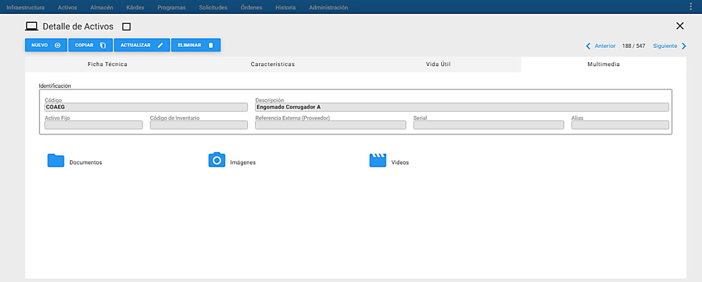
En la gráfica anterior, Vista Parcial de Características, se aprecian sus componentes y sus respectivos contenidos. En la ventana Detalle de Características se encuentra la información relevante a la Característica seleccionada en el Visor, que hace referencia al Activo / Equipo que está activo.
A continuación se describen los campos que componen esta Ventana información adicional.
Cuadro Identificación: Aparece con los campos bloqueados para que el usuario visualice la información básica del Activo al cual se le están definiendo las Características.
Car. Técnica: En este campo se traen automáticamente las características definidas en la Infraestructura, para seleccionar aquellas que son propias del Activo / Equipo activo.
Unidad de Medida: En este campo se traen automáticamente las Unidades de Medida definidas en la Infraestructura, para seleccionar aquella que corresponda a la Característica seleccionada.
Tipo: En este campo se define la cualidad de la Característica definida de acuerdo con los siguientes criterios:
- Controlable
- No controlable
Valor Nominal: En este campo se ingresa el Valor Nominal (Máximo 30 caracteres) de la Característica definida de acuerdo con las indicaciones del fabricante.
Tolerancia: En este campo se ingresa el factor de tolerancia permitido para la característica definida de acuerdo con los criterios del fabricante o la experiencia técnica de los responsables del Activo / Equipo. Existen 2 campos y son:
Desde: Se define el valor mínimo permitido para la característica definida.
Hasta: Se define al valor máximo permitido para la característica definida.
Características Controlables
Esta opción permite ingresar valores de medición a aquellas características que fueron definidas previamente como controlables.
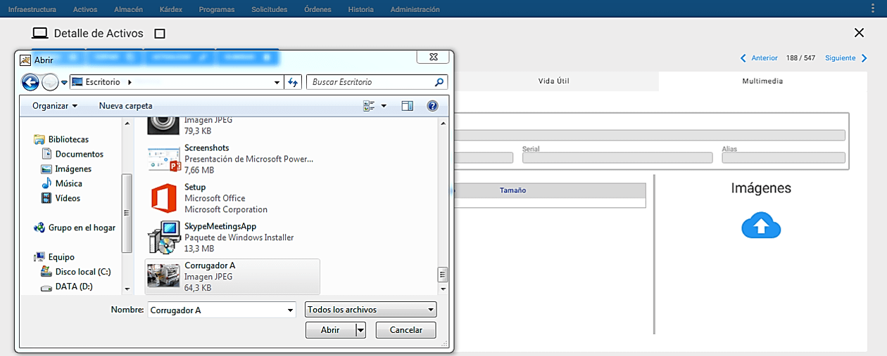
En la gráfica anterior, Vista Parcial de Características Controlables, se aprecian sus componentes y sus respectivos contenidos. En la ventana Detalle de Características se encuentra la información relevante a la Característica seleccionada en el Visor, que hace referencia al Activo / Equipo que está activo. Junto con esta información se encuentra un conjunto de datos para el registro de la medición que se va a registrar.
A continuación se describen los campos que componen esta Ventana información adicional.
Car. Controlable: En este campo se despliegan automáticamente las características que fueron definidas previamente como Controlables, para seleccionar aquella a la cual se le va a registrar una determinada medición.
Unidad de Medida: En este campo se trae automáticamente la Unidad de Medida definida en la Característica Controlable seleccionada.
FF Medición: En este campo se registra la fecha en la cual se realizó la medición de la característica.
Valor: En este campo se ingresa el valor registrado en la medición de la característica.
Vida Útil

En la gráfica anterior, Ventana de Vida Útil, se aprecian sus componentes y sus respectivos contenidos.
A través de la ventana de Vida Útil se registra todo el compendio de las fechas en forma de cronología desde que se adquiere el Activo hasta su disposición final.
A continuación se describen los campos que componen esta Ventana información adicional.
Cuadro Identificación: Aparece con los campos bloqueados para que el usuario visualice la información básica del Activo al cual se le están definiendo las Características.
FF Registro: En este campo se registra la fecha de registro del Activo en el software AM.
FF Fabricación: En este campo se registra la fecha de fabricación del Activo dada por el fabricante.
FF Ingreso Inventario: En este campo se registra la fecha en que ingresa el Activo al sistema de Activos de la institución.
FF Fin Garantía: En este campo se registra la fecha en la que se da por terminada la garantía del Activo / Equipo por parte del Fabricante o Proveedor. Sí la garantía está vigente, la fecha se muestra en color verde, mientras que sí la garantía se encuentra vencida, la fecha se muestra en color rojo.
FF Instalación: En este campo se registra la fecha en la cual se instaló el Activo en el servicio.
FF Inicio Operación: En este campo se registra la fecha en la cual inició el funcionamiento en productivo del Activo.
FF Dado de Baja: En este campo se registra automáticamente por el sistema la fecha en que se dio de baja el Activo, cuando se selecciona el estado inactivo “I-Dado de Baja”.
FF Adquisición: En este campo se registra la fecha en la cual se formalizó la adquisición del Activo. Esa adquisición puede ser obtenida a través de una Compra, Donación, Arrendamiento Financiero, Comodato, Préstamo y Otro.
Tipo de Adquisición: Se elige de la lista el medio por el cual se adquirió el Activo. Puede ser: Compra, Donación, Arrendamiento Financiero, Comodato, Préstamo y Otro.
Documento Adquisición: Se registra el número del Documento relacionado con el Tipo de Adquisición del Activo.
Valor Moneda Nacional: En este campo con capacidad de 13 dígitos, se escribe el valor de la máquina según la moneda que se indica en el campo Moneda Nacional (normalmente moneda local).
Moneda Nacional: En este campo se selecciona el nombre de la moneda de acuerdo con la definición que se haga de la tabla de infraestructura (moneda local).
Valor Moneda Extranjera: En este campo con capacidad de 13 dígitos, se escribe el valor de la máquina según la moneda que se indica en el campo Moneda Extranjera (normalmente moneda de origen).
Moneda Extranjera: En este campo se selecciona el nombre de la moneda de acuerdo con la definición que se haga de la tabla de infraestructura (moneda de origen).
Multimedia

En la gráfica anterior, Ventana Multimedia, se aprecian sus componentes y sus respectivos contenidos.
A través de la ventana Multimedia se adjunta información adicional al AC en cada una de sus carpetas asignadas. Esta opción permite asociar al AC, uno o varios documentos, con el objetivo de facilitar el trabajo a realizar, o guiarlo, o detallarlo minuciosamente. Se aceptan documentos de extensiones .DOC, XLS, PDF, JPG, es decir, de Microsoft Word o Microsoft Excel, Acrobat o Imágenes varias.
Los documentos anexos pueden contener: ayudas necesarias en la ejecución de la OT que se genera desde este EQ: planos, manuales técnicos, manuales de normas técnicas de Mantenimiento o de especificaciones detalladas, normas de seguridad, enfoques de acción, procedimientos sobre cómo realizar la labor, check lists, protocolos de prueba y otra información estándar para su ejecución, en aras de optimizar los recursos de tiempo y de insumos a ser consumidos, como también en aras de preservar la seguridad del recurso humano.
A continuación se describen las carpetas que componen esta ventana; cuando se quiera actualizar o ingresar nueva información al AC, se deberán registrar así:
Cuadro Identificación: Aparece con los campos bloqueados para que el usuario visualice la información básica del Activo al cual se le están definiendo las Características.
Documentos: En esta carpeta se relacionan toda clase de documentación relacionada al AC. Ejemplo: Archivos en Word, pdf, Excel, entre otros.
Imágenes: En esta carpeta se relacionan toda clase de imágenes relacionadas al AC. Ejemplo: Imágenes en formato jpg, png, entre otros.
Videos: En esta carpeta se relacionan porciones de videos relacionados al AC. Ejemplo: Videos en formato wmv, entre otros.

Para adicionar un documento, imagen o video, se debe dar clic en la carpeta deseada, luego se da clic a Cargar, a continuación se abre una nueva ventana para realizar la búsqueda del archivo a subir, se selecciona el archivo y se da clic en abrir.
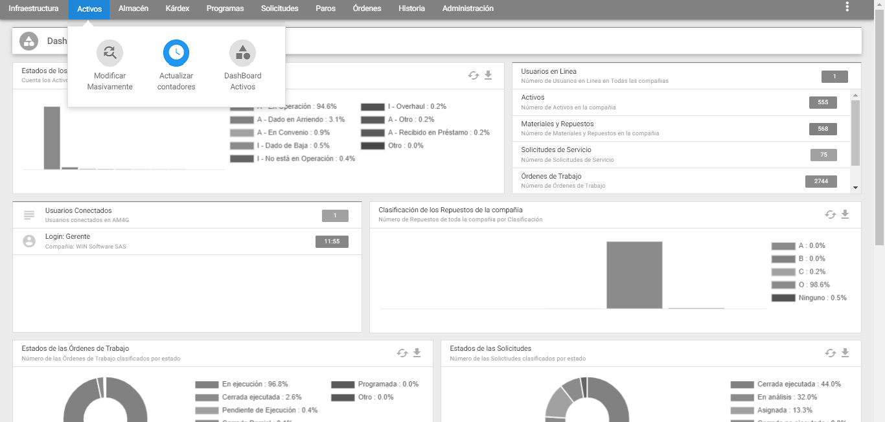
Los archivos que se van adicionando van quedando guardados uno debajo del otro y si se da un clic en uno de las imágenes, se visualiza la imagen adjunta.
Para desasociar un documento, o una imagen o un video, al AC se da clic al icono de nar (basura) que se encuentra al lado derecho del archivo al que se le va a realizar la operación. Inmediatamente, sale un mensaje de alerta que pregunta al usuario si está seguro de nar este registro y se da clic en el botón Aceptar.
Si se desea descargar un archivo adjunto al AC, se debe dar clic en <span class=”iconify btn” data-icon=cloud-download>la nube con flecha hacia abajo</span>
, que se encuentra al lado derecho del archivo que se quiere descargar.
Transacciones
Modificar Masivamente
A esta opción se llega al sobreponer el cursor del mouse sobre el módulo de Activos y al lado derecho se despliega el conjunto de transacciones disponibles para el módulo de Activo, luego se elige la transacción “Modificar Masivamente”.

Esta transacción permite cambiar masivamente el Estado, Ubicación Física, Centro de Costos, Encargado, Comentarios, Proveedor y Fabricante, de los Activos /Equipos previamente seleccionados, que se encuentran en el Visor. Para ello se debe dar clic al link en azul ** “Modificar Masivamente”** ubicado al lado superior izquierdo de la ventana, seguidamente se muestra las opciones de modificación masiva disponibles.

En la gráfica anterior, Modificar Masivamente, se aprecian sus componentes y sus respectivos contenidos.
A continuación se describen los campos que componen esta Ventana información adicional.
Modificar Solamente Este Activo: Al escoger esta opción, se ejecutan los cambios marcados (Ficha Técnica, Vida Útil e Info. Biomédica) al Equipo/Activo que se encuentre seleccionado en el visor.
Modificar Todos los Activos en el Visor: Al escoger esta opción, se ejecutan los cambios marcados (Ficha Técnica, Vida Útil e Info. Biomédica) a todos los Equipos/Activos que se encuentren en el visor.
Modificar Descripción: Se Modifica Masivamente la Descripción, del o los Equipos que están previamente seleccionados en el visor.
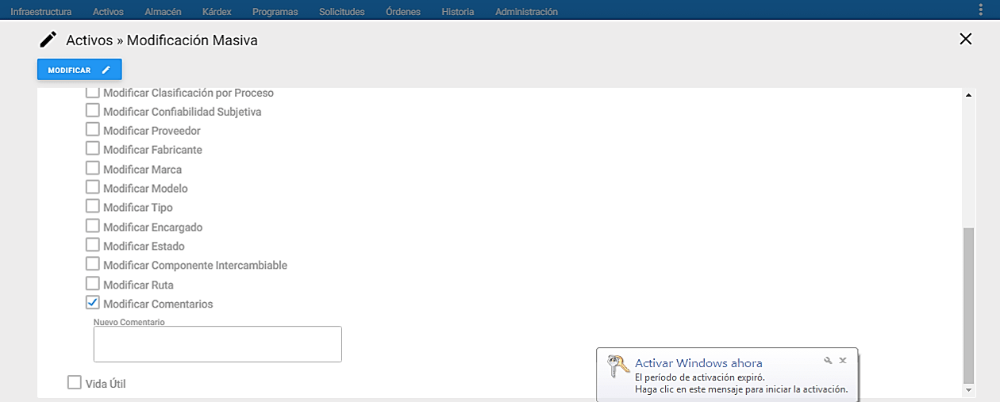
Modificar Referencia Externa (Proveedor): Se Modifica Masivamente la referencia externa proveedor, del o los Equipos que están previamente seleccionados

Modificar Activo Padre: Se Modifica Masivamente el Activo Padre, de los Equipos que están previamente seleccionados en el visor. Al seleccionar el Activo Padre, se asigna automáticamente el Centro de Costo y la Ubicación Física asociados al Activo Padre seleccionado.
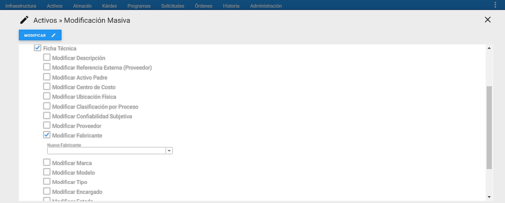
Modificar Centro de Costo: Se Modifica Masivamente el Centro de Costo, de los Equipos que están previamente seleccionados en el visor.

Modificar Ubicación Física: Se Modifica Masivamente la Ubicación Física, de los Equipos que están previamente seleccionados en el visor.
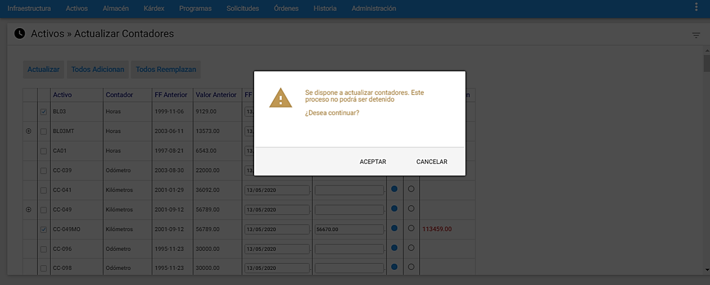
Modificar Clasificación por Proceso: Se Modifica Masivamente la Clasificación por Proceso, de los Equipos que están previamente seleccionados en el visor.

Modificar Confiabilidad Subjetiva: Se Modifica Masivamente la Confiabilidad Subjetiva, de los Equipos que están previamente seleccionados en el visor.

Modificar Proveedor: Se modifica Masivamente el Proveedor, de los equipos que están previamente seleccionados en el visor.

Modificar Fabricante: Se modifica Masivamente el Fabricante, de los equipos que están previamente seleccionados en el visor.
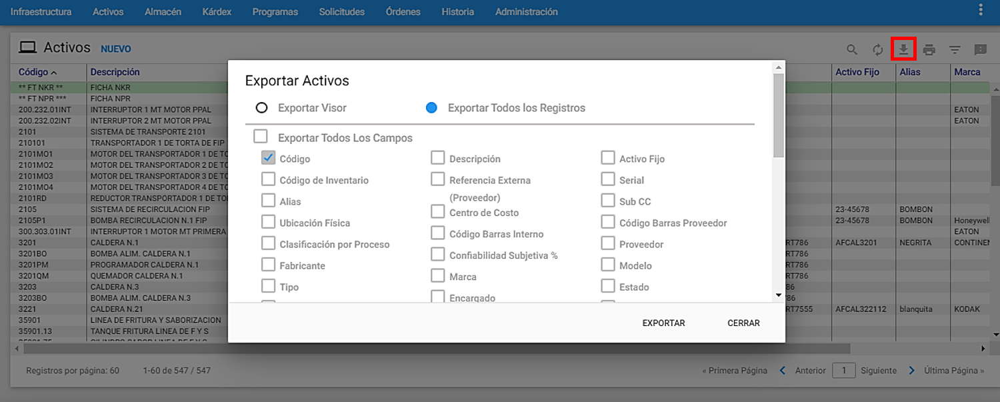
Modificar Marca: Se modifica Masivamente la Marca, de los equipos que están previamente seleccionados en el visor.
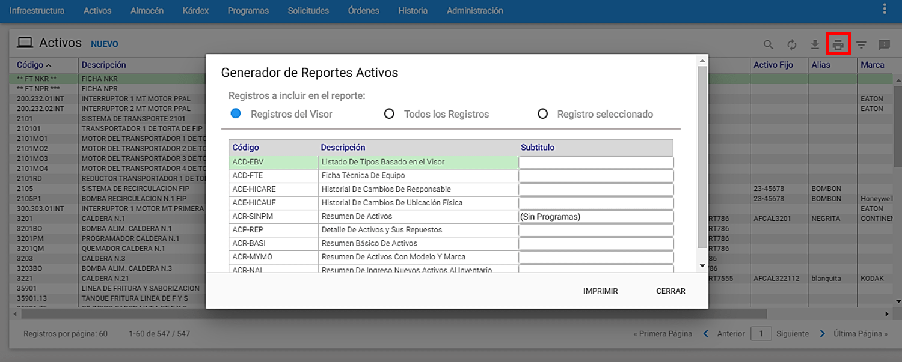
Modificar Modelo: Se Modifica Masivamente el Modelo, de los Equipos que están previamente seleccionados en el visor.
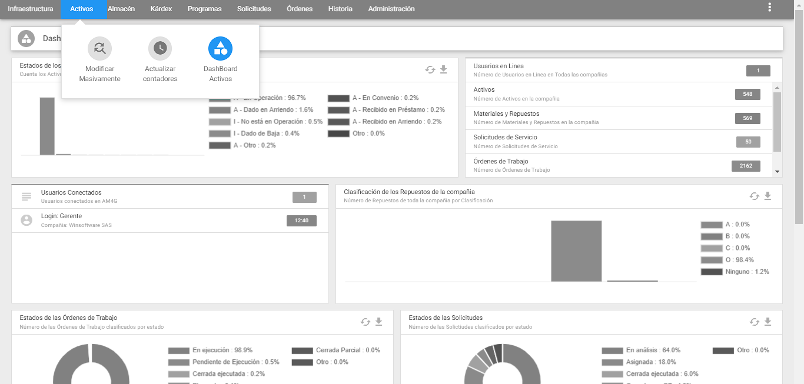
Modificar Tipo: Se Modifica Masivamente el Tipo, de los Equipos que están previamente seleccionados en el visor.

Modificar Encargado: Se Modifica Masivamente el Encargado, de los Equipos que están previamente seleccionados en el visor.
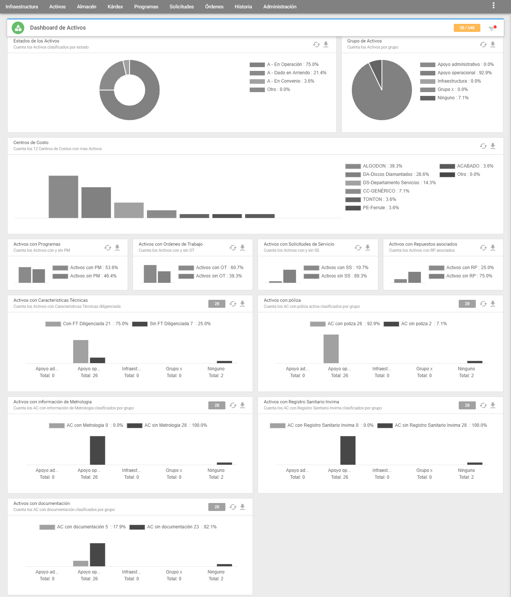
Modificar Estado: Se Modifica Masivamente el estado Activo – Inactivo, de los Equipos que están previamente seleccionados en el visor.

Modificar Componente Intercambiable: Se Modifica Masivamente el Componente Intercambiable, de los Equipos que están previamente seleccionados en el visor.

Modificar Ruta: Se Modifica Masivamente la Ruta, de los Equipos que están previamente seleccionados en el visor.

Modificar Comentarios: Se Modifica Masivamente los Comentarios, que están previamente digitados o seleccionados en el visor

Modificar FF Registro: Se Modifica Masivamente la fecha de registro ubicada en la pestaña de Vida Útil, de los equipos que están previamente digitados o seleccionados en el visor.

Se Modifica Masivamente la fecha de fabricación ubicada en la pestaña de Vida Útil, de los equipos que están previamente digitados o seleccionados en el visor.

Modificar FF Ingreso Inventario: Se Modifica Masivamente la fecha de ingreso al inventario ubicada en la pestaña de Vida Útil, de los equipos que están previamente digitados o seleccionados en el visor.

Modificar FF Instalación: Se Modifica Masivamente la fecha de instalación ubicada en la pestaña de Vida Útil, de los equipos que están previamente digitados o seleccionados en el visor.

Modificar FF Inicio Operación: Se Modifica Masivamente la fecha de inicio de operación ubicada en la pestaña de Vida Útil, de los equipos que están previamente digitados o seleccionados en el visor.
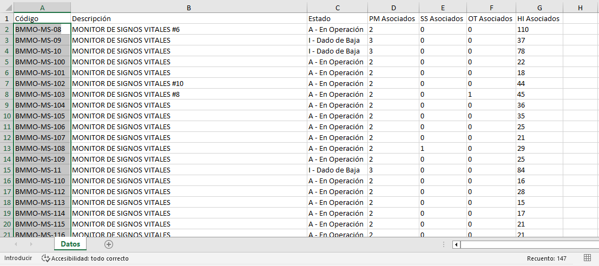
Modificar FF Dado de Baja: Se Modifica Masivamente la fecha de dada de baja en la pestaña de Vida Útil, de los equipos que están previamente digitados o seleccionados en el visor.
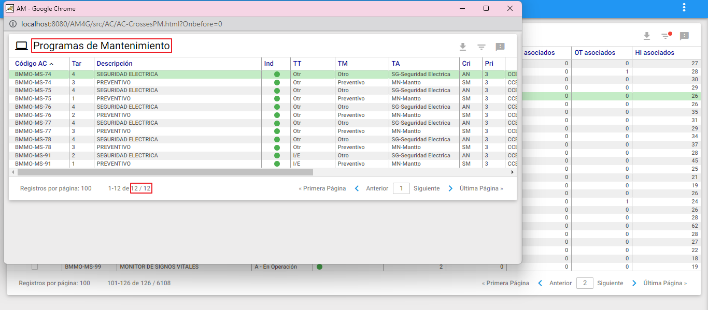
Modificar FF Adquisición: Se Modifica Masivamente la fecha de adquisición ubicada en la pestaña de Vida Útil, de los equipos que están previamente digitados o seleccionados en el visor.

Modificar Tipo Adquisición: Se Modifica Masivamente el tipo de adquisición seleccionado de la lista desplegada y que está ubicada en la pestaña de Vida Útil, de los equipos que están previamente digitados o seleccionados en el visor.

Modificar Contrato: Se Modifica Masivamente el Contrato ubicado en la pestaña de Vida Útil, de los equipos que están previamente digitados o seleccionados en el visor.

Modificar Número de Póliza: Se Modifica Masivamente el número de la póliza ubicada en la pestaña de Vida Útil, de los equipos que están previamente digitados o seleccionados en el visor.

Modificar FF Ingreso de Póliza: Se Modifica Masivamente la fecha de ingreso de la póliza ubicada en la pestaña de Vida Útil, de los equipos que están previamente digitados o seleccionados en el visor.

###Actualizar Contadores
Es la función que facilita la Actualización de los Contadores de los Equipos. A esta ventana se llega mediante un clic en la opción Actualizar Contadores. de la Sección “Transacciones” del Submenú de Equipos.
La ventana despliega la lista de los Equipos que tienen registrado un Contador dentro de su definición de Ficha Técnica. Junto al Código de cada Equipo aparece el tipo de Contador y los datos referentes a la última lectura registrada. Posteriormente, a la derecha de cada línea de un Equipo se encuentran disponibles un conjunto de campos para el registro de la información correspondiente a una nueva lectura.

En la gráfica anterior, Ventana para Actualización de Contadores, se aprecian sus componentes y sus respectivos contenidos. A continuación se describen los campos que componen esta ventana, junto con una breve guía de uso.
Equipo: En esta columna aparece el listado de todos los Equipos que tienen definido un Contador en su Ficha Técnica. Al lado izquierdo del Equipo puede haber dos campos. El primero, al extremo izquierdo un signo (+) o un signo (-), que permiten visualizar u ocultar respectivamente, el despiece del Equipo, en aquellos componentes de despiece que también tienen una definición de contador, en su Ficha Técnica. El segundo es una casilla de selección que es marcada cuando se quiere actualizar con un nuevo valor, el contador para el Equipo de esa línea.
Contador: En esta columna se trae automáticamente para cada Equipo el Contador que tenga definido en su Ficha Técnica.
Fecha Ant.: En esta columna se muestra la fecha de la anterior medición del Contador de cada Equipo.
Med. Ant: En esta columna se despliega el valor de la medición anterior.
Fecha Act: En esta columna el sistema propone la fecha del día como fecha de la nueva lectura del Contador. Cada fecha se puede asumir o se puede modificar, según sea la fecha de realización de la lectura que se está registrando.
Med. Act: En esta columna se ingresa el valor de la lectura de contador a ser registrada.
AD: Seleccionando esta opción Botón Adicionar se realiza la adición del campo Medición Actual al campo Medición Anterior y deja el resultado en la columna Nueva Medición.
RE: Seleccionando esta opción Botón Remplazar se copia el valor de la columna Medición Actual a la columna Nueva Medición.
Nueva Medición: En esta columna se listan los valores actualizados de ese contador para el Equipo de cada línea.
Al finalizar de registrar todas las lecturas de contadores se da un clic en el botón Actualizar y el sistema responde con una Caja de Diálogo como la que sigue, en cuyo caso para realizar efectivamente las actualizaciones a las lecturas de contadores registradas se da un clic en el botón Sí.

Realizado el proceso se cambian los datos en rojo de la columna Nueva Medición por color verde, mostrando los campos actualizados.
Es posible definir en valores por defecto la posibilidad de “No modificación de Contadores decrementales por Equipo”, cuya función es impedir la carga de Contadores inferiores al que posee en la actualidad el equipo.

Adicionalmente, se cuenta con la posibilidad de activar la opción de “No permitir modificaciones por encima del estándar de planeación”, cuya funcionalidad es impedir la carga de contadores por encima de un estándar predefinido para un periodo de tiempo.

Cambiar a TreeGrid
Es la función que facilita visualizar en vista de árbol un conjunto de Activos de acuerdo al subgrupo o todos los Activos del módulo. A esta ventana se llega mediante un clic en el icono con ubicado en la parte superior derecha de la ventana Visor de Activos.

Exportar
Esta opción permite la exportación de los Equipos/Activos que aparecen en el visor, totales o provenientes de un subgrupo, a un archivo de Excel que se descarga automáticamente en la estación cliente donde se ejecutó el proceso.
Al ejecutar esta transacción, se abrirá una ventana la cual se muestra a continuación.

Al darle clic en el botón Exportar , se generará un archivo de Excel que se descarga automáticamente en la estación cliente donde se ejecutó el proceso, el objetivo de esta exportación es llevar toda la información de los Equipos contenidos en el visor a un archivo plano, para luego ser analizados.
Adicionalmente, es posible exportar todos los campos de la ventana Detalle de los Activos / Equipos, para esto se da clic en el cuadro llamado ** “Exportar Todos Los Campos”**. También, es posible exportar uno o varios campos de la ventana Detalle de los Activos / Equipos, para esto se da clic en cada uno de los cuadros que acompañan los campos.
Servicios
Este comando permite visualizar los reportes relacionados con los Activos / Equipos. Existen los siguientes tipos de reportes básicos disponibles:

Los anteriores reportes pueden ser seleccionados para uno o varios Equipos:
Todos los Registros: Con esta opción se imprimen todos los reportes de los Activos / Equipos existentes en la base de datos, sin importar si se ha realizado un subgrupo.
Registros del Visor: Esta opción permite hacer una impresión de todos los Activos / Equipos que están seleccionados en la Ventana Visor, es decir los registros que están seleccionados en el subgrupo actual.
Registro Seleccionado: Esta opción permite hacer una impresión del Activo / Equipo que esta seleccionado en la Ventana Visor (el cursor verde se encuentra sobre él).
Subtítulo: En este campo es posible registrar un poco menos de una línea de información, tipo documentación del Reporte, para que se imprima bajo el área de títulos estándar.
Para visualizar los reportes, se selecciona el reporte y luego se da clic al botón Imprimir. .